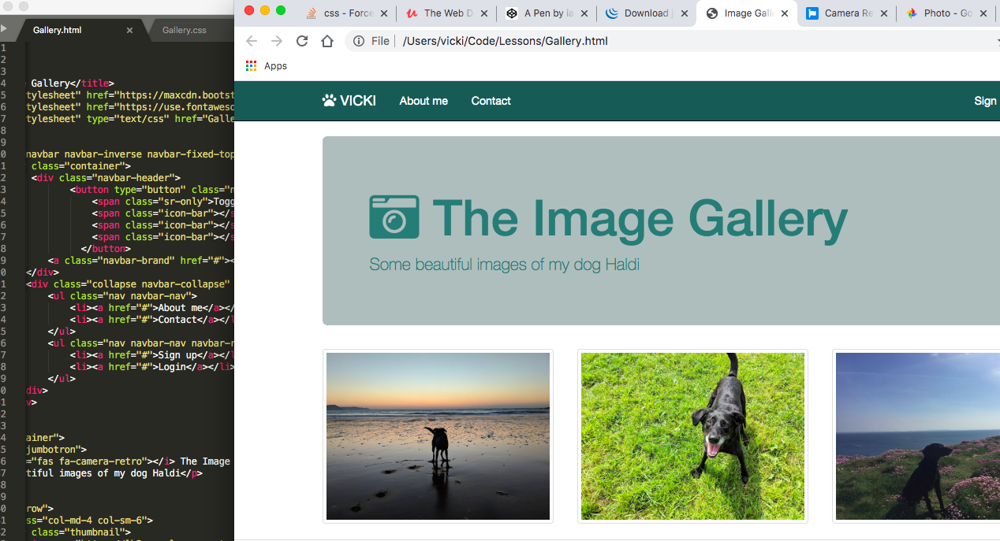
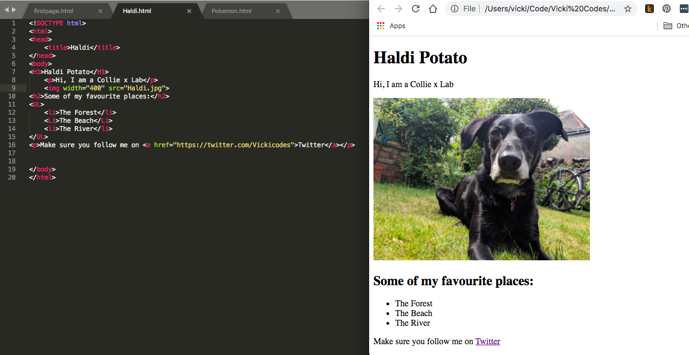
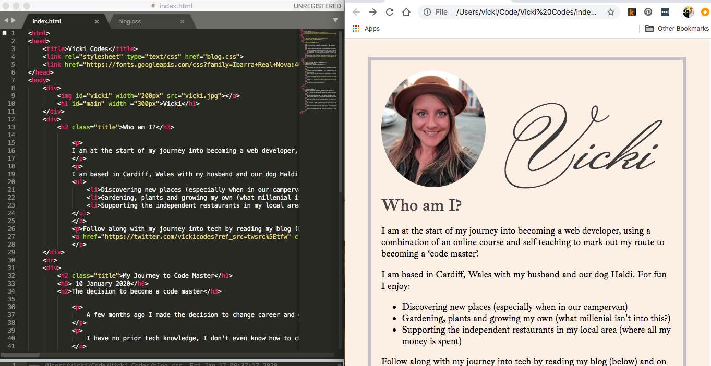

23 January 2020
Week two of the journey - You Got This!
At the weekend I attended my first ever tech conference You Got This 2020 "An affordable one day conference for early-career developers to talk about the non-technical skills needed for a happy, healthy work life." I had the BEST time! I met up with one of the girls I have been talking to via twitter (who is also making a career change), spent some time chatting to people who have recently started a job as a developer and I chatted with some of the speakers at the event. I really pushed myself outside of my comfort zone and by the time I got home was completely exhausted, but I am so glad that I went! I came away with lots of connections that I am able to call upon when I need support in different areas and tips that will help me on my journey (and a shed load of stickers!).
On my course this week I have been learning all about Bootstrap and how this can support frontend development. I have built a few different sites over the past few days, including a photo gallery of images of my dog (which I had a lot of fun making!) but overall I have found this week a bit overwhelming. 
Bootstrap is amazing! It does so much and really makes styling so much easier than writing new CSS for every element, but I don't know how I will ever be able to understand it. I know that I don't need to memorise Bootstrap, but I do need to know what it does so that I can understand how it can support my projects; this is what I have found overwhelming.
I really have needed to remind myself that I am only just at the beginning of my journey and that knowledge and learning will come with time. One of the talks at the conference discussed how it takes time to actually feel like we are learning something. I might write those words in big letters above my desk so that when I feel like nothing is going in I remember that it just takes time.
Each week I am following along with my course for 4 days and then on the 5th actually putting what I have learned into a project of my own so that I can see what I have understood, see where my knowledge gaps are and embed the learning into my brain.
My project at the moment is just my website and so I have made a few changes, it doesn't look too different visually (except that it is now over 2 pages and has a Navbar) but it is a lot more responsive.

For a week when I have really struggled with the idea that “I can do this” putting my learning into practice and seeing how far I have come is really important! I am definitely not finishing the week on as much of a high as last week, but I am still eager to progress along my journey.
Next week I start on Javascript!
17 January 2020
The first week on my journey to becoming a code master
So I started the week with my new (to me) Macbook Air and a comfortable workplace, with lots of natural light and my dog sleeping at my feet. I was eager to get started!
By the end of day one, when I had learned HTML basic tags, comments and lists, I felt so good that I shared a screenshot of what I had made with all of my friends Such a basic page, but it felt really good having made something myself. I finished the first day absolutely buzzing and so eager to start again the next day!
Over the rest of the week things definitely got harder, I can't tell you how many times I left the ; off a CSS selector and spelling colour ‘color’ was difficult to get my head around. Surprisingly I found that one of my biggest challenges was having moved from Windows to a Mac, my brain just didn’t want to accept [cmd+C] to copy text! It turns out my most searched for subject this week is ‘keyboard shortcuts on a mac’.
At one point I really couldn't figure out how to make a ‘descendant’ selector work with a ‘nth-of-type’ selector, my husband (who has been a web developer for over 10 years) is under strict rules not to give me any answers but he was giving me guidance at this point, when I finally figured it out we both let out a little cheer and he said “see, you can do this!” I am really grateful for that encouragement. I am sure that I will come across many of those occasions where I’m feeling like “I’m just not capable” during this learning period, and probably well into my career, but drawing on those around me to be my “cheerleaders” is really going to help!
There have been lots of other highs too, it felt really good figuring things out and solving problems on my own, I made lots of mistakes and then learnt from them which gave me a real buzz!
I have finished the week with my first iteration of my webpageI am really proud of how it looks, if you had told me that by the end of my first week I would be creating something that looked like this I would not have believed you, but here it is! Bring on week 2!!
10 January 2020
The decision to become a code master
A few months ago I made the decision to change career and go into coding. I am very creative and have always taken a ‘trial, error and amend’ approach to life and so after being made redundant from a job that I loved in the banking industry, and not really knowing what to do next, I decided to give coding a try.
I have no prior tech knowledge, I don't even know how to change the line spacing on a word document! I have never needed to know as I am surrounded by “techies” who can do it for me (and in my opinion are a lot smarter than I am). I started looking into whether it was possible for someone like me (a woman, in her mid thirties, with no university degree) to even consider the possibility of a career in web development. It turns out I am not the only one who has made the change and there are heaps of resources and support out there to help people like me along the way.
When I finally made the decision to take the leap, I felt as though I was standing at the bottom of a mountain with no clue of how I would get to the top, or the challenges that I would face along the way; but I know I have determination and a great support network around me and so that is what I am going to use to get me there.
I spent quite a bit of time researching my options and looking for a course that would suit me. After listening to a podcast on CodeNewbies, I eventually settled on ‘The Web Developer Bootcamp by Colt Steele’ on Udemy; his style of teaching (short videos, lots of exercises) is conducive to the way I learn and so decided to sign up to that.
I took to Twitter and announced the start of my journey and I have been inspired with the response and support received! So much encouragement from other developers at different stages in their career, it really helped to quiet the ‘negative committee’ that sits inside my head, and for that I am really grateful.
Now to start climbing that mountain....